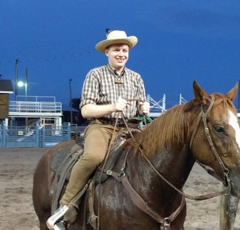

CV
Alex Chentsov
Student of RSFE22Q2

Education
Undergraduate degree
Belarus State University
Economic Faculty
Corporate Finance
2014 - 2018
Postgraduate Degree
- Belarus State University
- Economic Faculty
- Economic Theory
- 2018 - 2019
English
- Pre-Intermediate Level (A2)
Skills
- HTML/ CCS
- JavaScript
Career Objective
My career objective now is to to become a junior FE developer. I want to change my specialization, so i starting learning course Front-end JavaScript in RS School. I think I'm easy to learn, sociable, responsible.
Work Experience
Junior research assistant
June 2019 - august 2022
After study at university, I worked more than 3 years as junior research assistant at Institute of Economics of the Ministry of Economics of the Republic of Belarus.